거절될 때와 effort 고르기
영상은 Anthropic 공식 문서 「Prompting Claude Fable 5.1」을 화면에 띄워 놓고 팁 열 가지를 하나씩 짚어요. 끝에 나오는 정리 화면이 전체 목차예요. 이 문서도 이 순서를 따라가되, 비슷한 주제끼리 다섯 묶음으로 나눴어요.
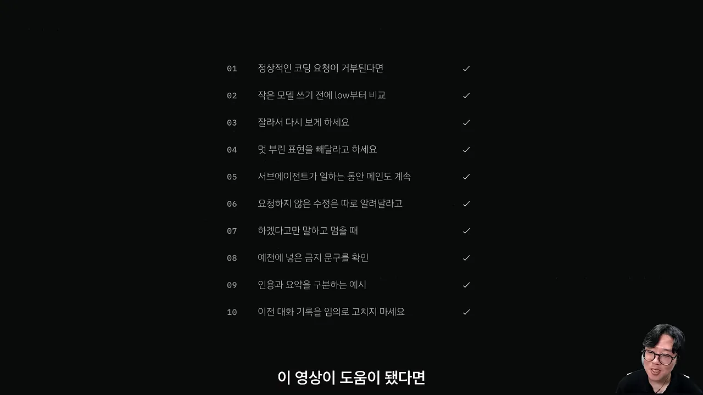
멀쩡한 요청이 거절될 때
Fable 5.1에는 위험한 요청을 막는 안전 분류기가 붙어 있어요. 가끔 정상 요청도 막는데, 이렇게 막히면 응답이 stop_reason: "refusal"로 끝나요. 가이드는 오탐이 잘 생기는 상황을 세 가지로 꼽아요. 화면 오른쪽 예시처럼 "오류 없이 컴파일돼?"라고 묻는 대신 "이 코드에 버그가 있어?"라고 물어요. 잘 알려지지 않은 언어라면 그 언어의 문서를 함께 줘서 문법을 참고하게 해요.
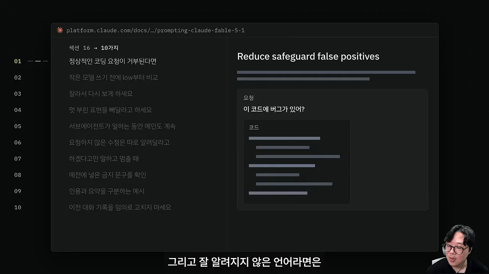
세 번째는 툴 결과예요. 아래 그림에서 툴이 돌려준 tool_result 아래에 base64 덩어리가 붙어 있고, 그게 Fable 5.1로 가는 순간 오른쪽에 stop_reason: "refusal"이 떠요. 툴이 base64를 돌려주고 있다면 모델에게 넘기는 결과에서 빼는 게 가이드가 권하는 해결책이에요.
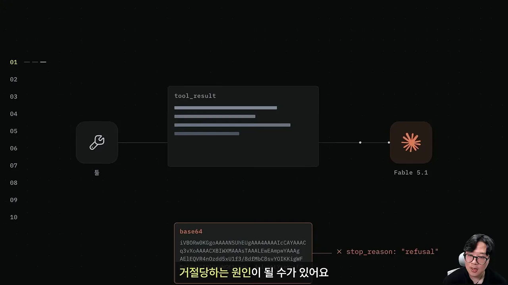
작은 모델 대신 low부터 비교해 보기
두 번째 팁은 effort 설정이에요. 작은 모델을 effort를 높여 쓰고 있었다면, 그 자리에 Fable 5.1의 low를 넣어 비교해 보라는 거예요. 화면의 인용문이 근거예요. low에서 Fable 5.1은 작업당 비용(cost per task)이 Opus·Sonnet과 비슷한데 점수는 더 높을 때가 많대요.
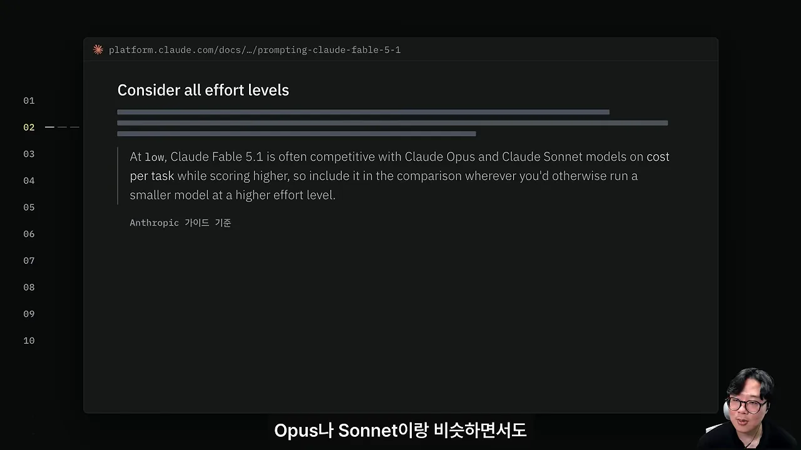
순서는 기본값인 high에서 시작해 같은 작업을 medium, low로 돌려 보고, 결과가 충분하면 낮추는 거예요. 발표자도 요즘은 주로 low를 쓴다고 해요. 다만 설정마다 조심할 점이 하나씩 있어요.
| effort | 영상이 말한 특징 | 대처 |
|---|---|---|
| low | 비용 대비 점수가 좋지만 검색을 훨씬 덜 해요 | 그 질문에서만 effort를 올리거나, 시스템 프롬프트에 검색하라고 적어요 |
| medium | high와 같은 작업으로 비교해 볼 후보예요 | 결과가 충분하면 내려 써요 |
| high | 기본값이자 출발점이에요 | 여기서 시작해요 |
| xhigh · max | 긴 문서를 생각 단계에서 다 써 놓고 답변에서 또 써서 오래 걸려요 | high로 먼저 해 보고, 필요하면 요청 끝에 한 문장을 붙여요 |
low에서 검색이 줄어드는 문제는 아래처럼 시스템 프롬프트에 한 줄을 넣으면 돼요. 화면에는 system 칸에 이 문장 하나만 들어 있어요.
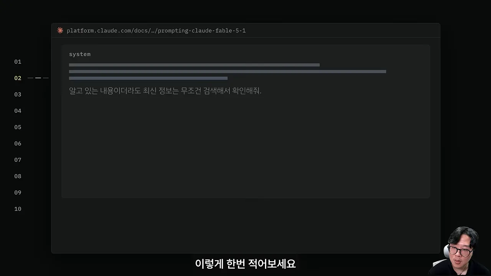
xhigh·max 쪽 문제는 그림 하나로 보면 쉬워요. 왼쪽 thinking 칸에는 줄이 빽빽하고, 오른쪽 reply 칸에는 같은 내용이 또 적혀 있어요. 같은 문서를 두 번 쓰는 셈이죠. 꼭 높은 설정을 써야 한다면 요청 끝에 "생각할 때는 구성과 핵심 내용을 정하기만 하고, 최종 문서는 최종 답변에서만 작성해 줘"를 붙여요.
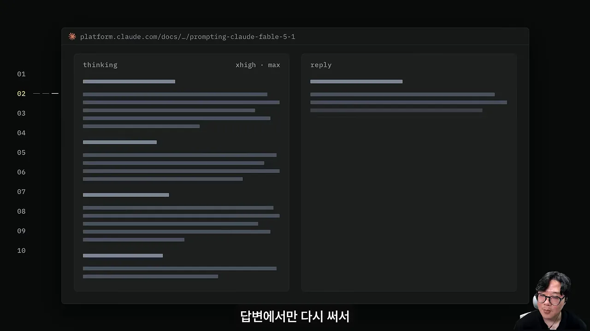
차트는 잘라서, 문장은 담백하게
빽빽한 차트는 잘라서 다시 보게
세 번째 팁은 Anthropic이 특히 강하게 권하는 방법이에요. AI(Artificial Intelligence)가 빽빽한 차트에서 작은 숫자를 놓친다면, 필요한 부분을 확대해서 다시 보게 해요. 아래 화면에서 막대그래프 한가운데 작은 네모가 AI가 고른 영역이에요. 툴이 그 부분을 잘라 크게 키운 이미지를 오른쪽 아래처럼 돌려주면, 원래는 너무 작아서 못 보던 숫자와 글자를 읽을 수 있게 돼요.
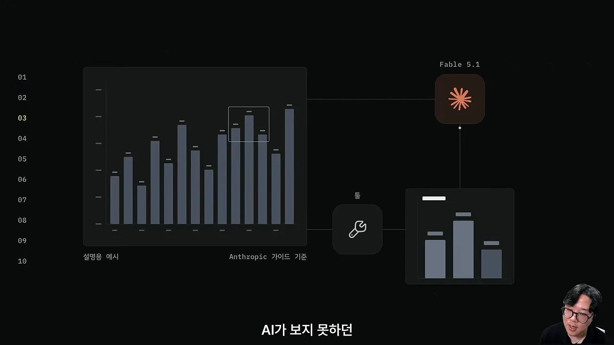
"확대해서 봐"라고 말만 해서는 소용없어요. 실제로 이미지를 자르고 확대하는 툴이 있어야 해요. 다음 장면은 같은 그림에 '확대해서 봐'라는 말풍선이 붙고, 툴 아래에 PIL(Python Imaging Library)과 OpenCV가 적혀 있어요. 이런 이미지 처리 라이브러리를 쓸 수 있는 환경이면 더 좋다는 뜻이에요.
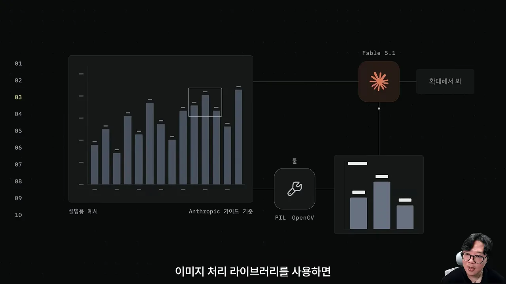
그렇다고 거창한 환경이 꼭 필요한 건 아니에요. 가이드 원문은 컨테이너를 띄우기 부담스러우면 이미지 크롭 툴 하나만으로도 개선 효과의 대부분을 얻는다고 해요.
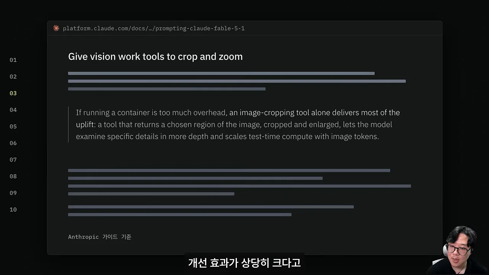
멋 부린 표현을 빼 달라고 하기
네 번째 팁은 글쓰기예요. AI가 뜻은 단순한데 괜히 비유로 돌려 말한다면 쓰는 방법이에요. 화면은 가이드의 Writing density 부분인데, 두 표현을 나란히 놓고 위쪽 '조정해볼 만한 매개변수'만 밝게 강조해요. 아래 '돌려볼 만한 다이얼'은 같은 뜻을 비유로 꾸민 문장이에요. 값을 바꿔 보라는 말일 뿐인데, 비유 때문에 오히려 이해하기 어려워져요.
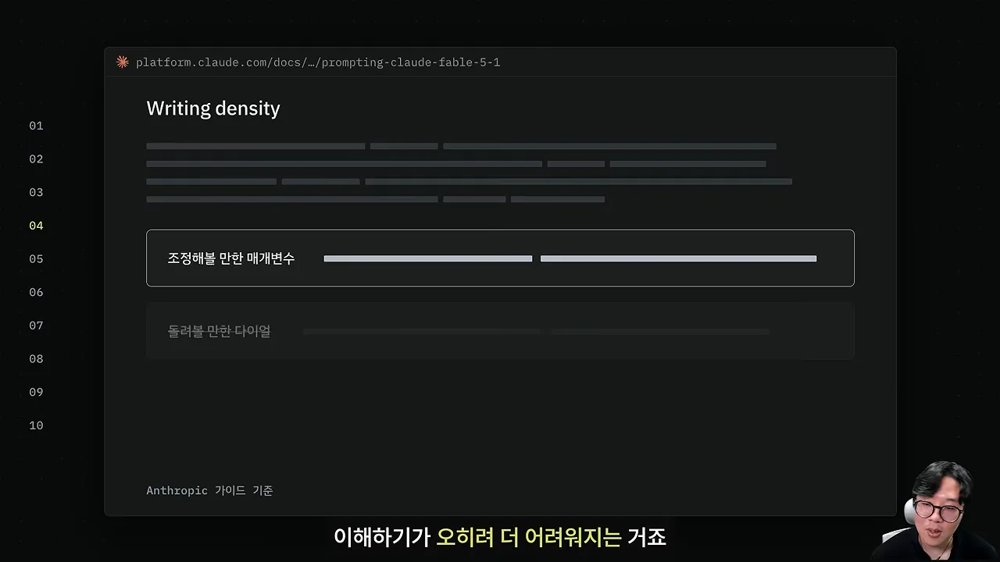
가이드는 이 한 줄만으로도 효과가 있다고 해요. 멋 부린 표현(mannered prose)을 다 빼고 뜻을 직접 쓰라는 말이에요.
Please remove all mannered prose.
멋 부린 표현은 모두 빼 주세요.
— 영상 02:43
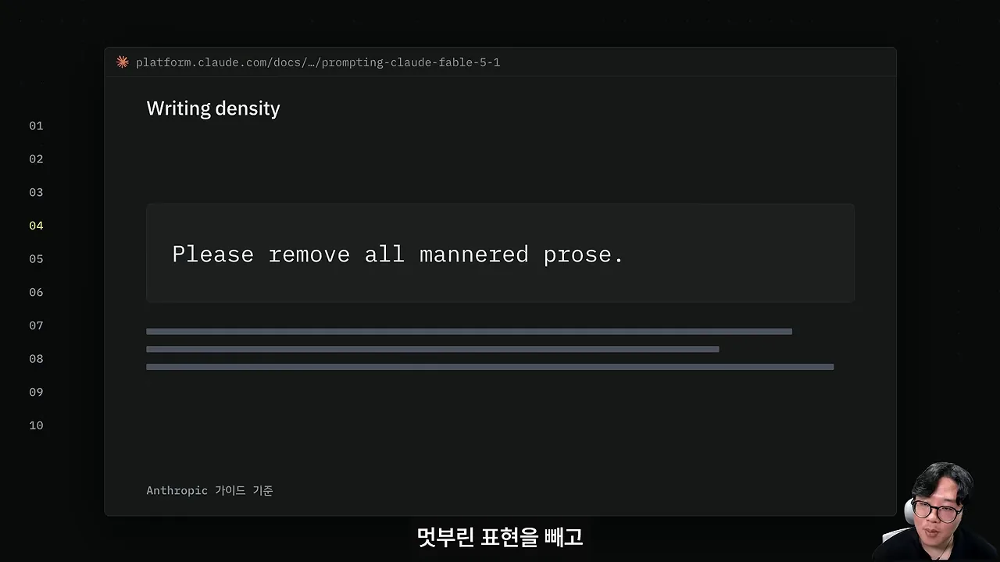
에이전트에게 일을 맡길 때
서브에이전트가 일하는 동안 메인도 계속 일하게
다섯 번째 팁이에요. 서브에이전트에게 일을 맡겼다면 메인 에이전트가 결과를 기다리며 놀지 말고 다른 일을 계속하게 해요. 아래 타임라인에서 위 줄이 메인, 아래 줄이 서브예요. 메인이 일을 넘긴 직후에도 막대가 끊기지 않고 이어지는 게 포인트예요. Anthropic에 따르면 이렇게 하면 품질과 비용은 비슷한데 평균 완료 시간이 줄어들어요.
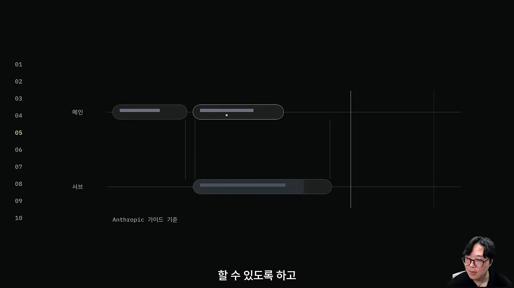
발표자는 이게 예전 습관과 반대라고 짚어요. 예전에는 메인 에이전트의 컨텍스트를 아끼려고 서브에 넘기고 기다리게 하는 경우가 많았거든요. 작업을 꼭 순서대로 해야 하는 게 아니라면, 서브에 넘긴 즉시 메인이 다음 일로 넘어가고 서브의 결과는 준비됐을 때 다시 받게 구성하라는 거예요. 그래도 메인이 계속 기다리기만 할 수 있대요. 병렬로 해도 될 것 같은 일이라면 스티어링으로 직접 밀어 줘도 좋아요.
요청한 것만 고치게
여섯 번째 팁은 범위예요. 로그인 오류를 고쳐 달랬는데 관련 없는 화면까지 바꾼다면 프롬프트에 한 줄을 넣어요. 화면 오른쪽 '변경' 목록을 보면 login.ts 말고도 profile.tsx, settings.tsx가 함께 바뀌어 있어요. 왼쪽 문장이 그걸 막는 지시예요.
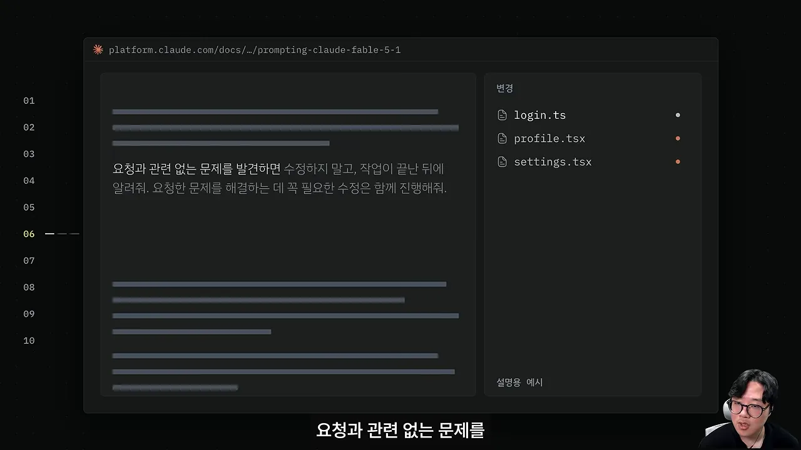
테스트 파일도 같은 문제가 있어요. 확인하려고 잠깐 만든 코드를 전부 테스트 파일로 남기는 거예요. 화면 오른쪽 tests/에 auth.test.ts, cart.test.ts가 쌓인 게 그 모습이에요. 발표자가 자주 쓴다는 문장은 이래요. 수정한 기능이 제대로 작동하는지는 확인하되, 확인용 코드를 다 테스트로 남기지 말고, 요청했거나 프로젝트가 같은 종류의 테스트를 관리할 때만 기존 방식대로 필요한 만큼 추가하라고요.
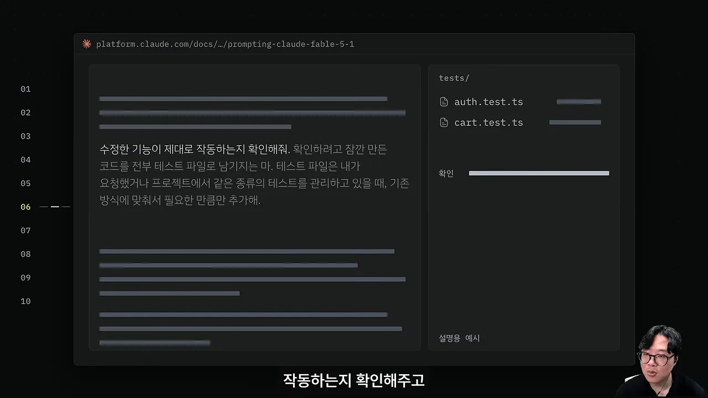
한두 줄만 고치면 되는데 파일 전체를 다시 쓰는 경우도 있어요. 바뀌지 않은 코드까지 다시 출력하느라 시간과 토큰이 더 들죠. 오른쪽 그림에서 '전체'와 '부분' 사이의 주황색 '토큰' 막대가 그 낭비를 보여 줘요. 이때는 시스템 프롬프트나 첫 사용자 메시지에 왼쪽 문장을 적어요.
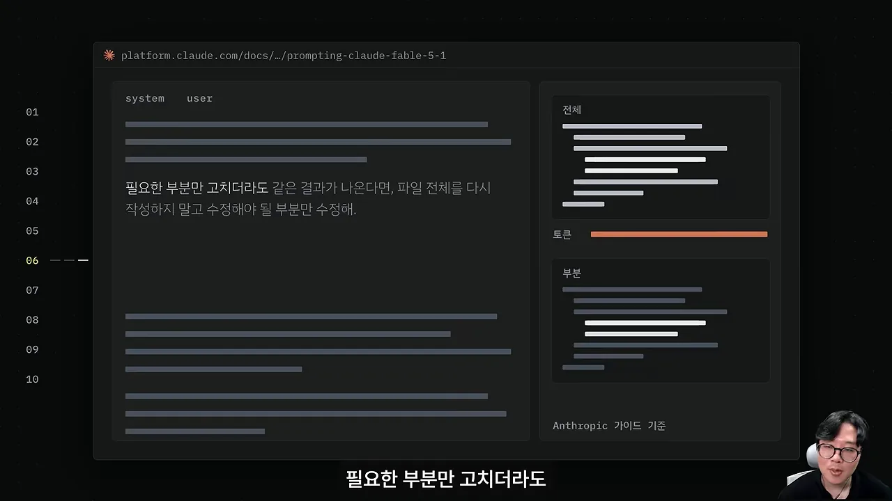
되묻거나 하다 말고 멈출 때
일곱 번째 팁은 일을 맡겨 두고 계속 지켜볼 수 없을 때 쓰는 거예요. 화면의 두 예시가 증상이에요. 왼쪽은 "진행할까요?"라고 되묻고, 오른쪽은 "다음에 하겠습니다"라고 하며 멈춰요. 아래 작업 막대가 둘 다 중간에서 멈춰 있어요.
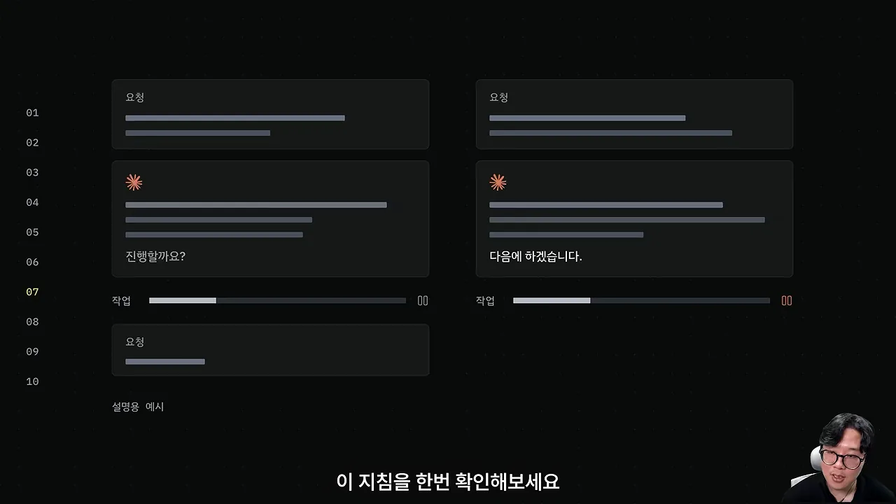
Anthropic은 시스템 프롬프트에 두 지침을 함께 넣으라고 해요. 첫째는 다시 허락을 묻느라 멈추지 말라는 것, 둘째는 일부만 하고 끝내지 말라는 것이에요. 화면 오른쪽 체크 목록에서 X 표시가 된 항목이 막힌 부분인데, 그 아래 항목들도 계속 진행돼요.
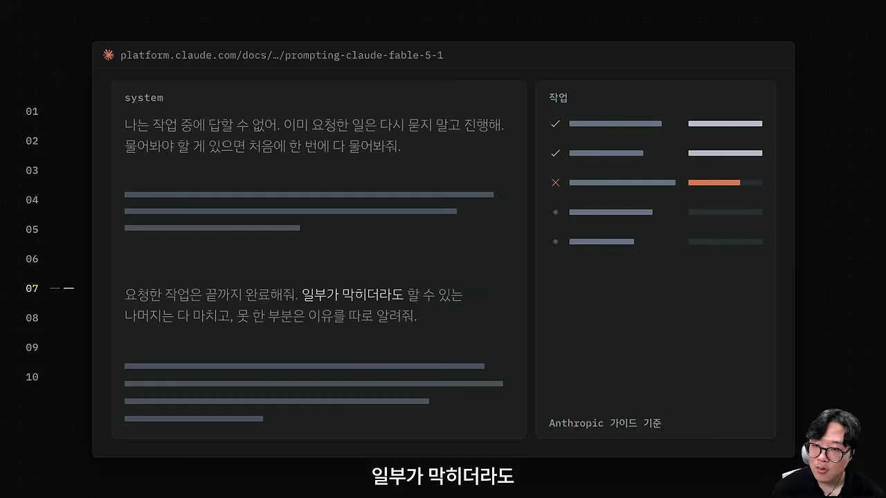
| 지침 | 시스템 프롬프트에 넣을 문장 (영상 화면 기준) |
|---|---|
| 되묻지 않기 | 나는 작업 중에 답할 수 없어. 이미 요청한 일은 다시 묻지 말고 진행해. 물어볼 게 있으면 처음에 한 번에 다 물어봐 줘. |
| 끝까지 하기 | 요청한 작업은 끝까지 완료해 줘. 일부가 막히더라도 할 수 있는 나머지는 다 마치고, 못 한 부분은 이유를 따로 알려줘. |
예외도 정해 둬야 해요. 되돌리기 어려운 삭제나 요청 범위를 바꾸는 일은 항상 먼저 묻게 해요. 의견만 물었을 때는 설명만 하고 고치지는 않게 해요. 아래 화면 오른쪽에서 '삭제', '범위'에는 "진행할까요?"가 붙고, '의견'에는 답변 칸만 있어요. 왼쪽 원문은 사용자가 문제를 설명하거나 질문하거나 혼잣말처럼 생각을 늘어놓을 때는 판단만 전하고 멈추라고 해요.
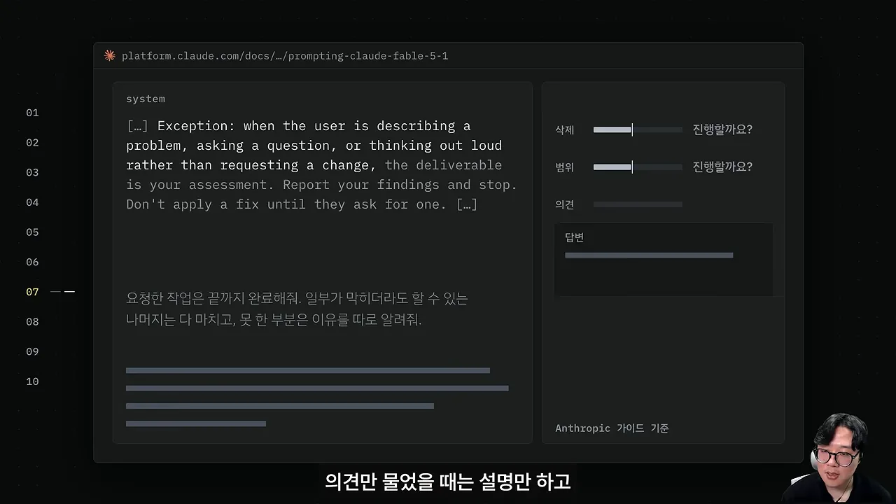
프롬프트가 길어 셋 다 넣기 부담스럽다면 첫 번째 지침, 즉 되묻지 말라는 것부터 넣으라고 해요.
서식, 진행 알림, 인용 표시
예전에 넣은 서식 금지 문구 점검하기
여덟 번째 팁은 이전 버전에 맞춰 쓴 프롬프트를 다시 보라는 거예요. 화면 system 칸에 강조된 "굵은 글씨나 목록을 쓰지 마" 같은 문장이 대표적이에요. 예전 모델이 굵은 글씨와 글머리표를 너무 많이 써서 넣어 둔 금지문이죠.
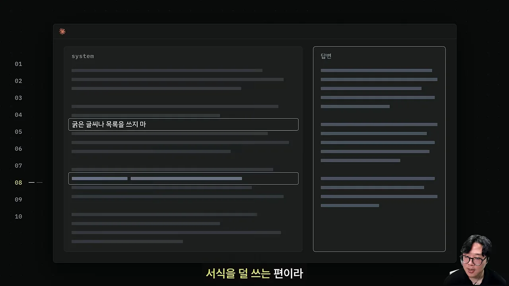
Anthropic에 따르면 Fable 5.1은 원래 서식을 덜 쓰는 편이에요. 그러니 이런 금지문은 지우거나, 필요할 때는 쓰도록 규칙을 바꾸는 게 좋아요. 다음 화면 system 칸의 영어 문장이 가이드가 예로 든 대체 규칙이에요. 요청받았거나 내용이 여러 갈래라 목록이 도움이 될 때는 목록을 쓰고, 사용자가 최소한의 서식을 원하면 따르고, 일상 대화에서는 평범한 문장으로 쓰라는 내용이에요.
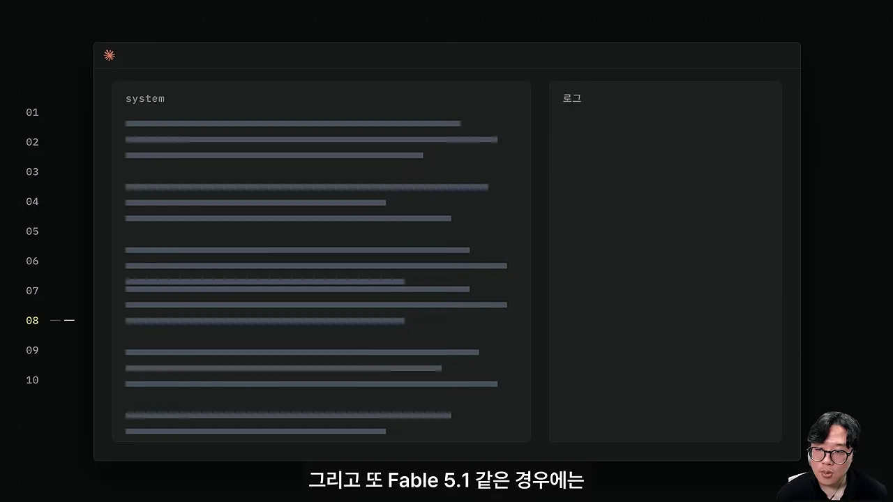
작업 중에 말이 없을 때
Fable 5.1은 설명도 덜 하는 편이에요. 툴을 연달아 쓰는 동안 아무 말이 없어서 답답했다면 진행 상황을 알려 달라고 요청해요. 화면 오른쪽 '로그'를 보면 툴 호출 줄 사이사이에 짧은 설명 줄이 끼어 있어요. 왼쪽 system 칸의 문장이 그걸 만든 지시예요.
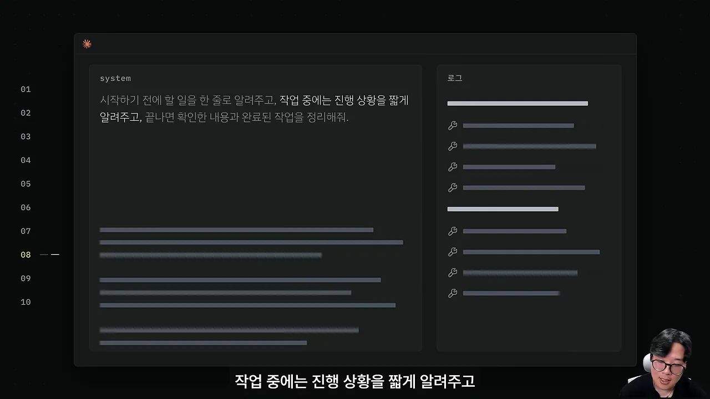
요약할 때 인용 표시를 빼먹으면
아홉 번째 팁이에요. 가이드에 따르면 Fable 5.1은 이전 버전보다 원문 문장을 가져오면서 따옴표를 빼먹는 경우가 훨씬 많대요. 그러면 문서에 실제로 쓰인 표현인지, AI가 정리하면서 쓴 말인지 구분하기 어려워요. 아래 화면 왼쪽 '원문'의 밝은 줄들이 오른쪽 '요약'에 그대로 옮겨져 있는데, 어디에도 인용 표시가 없어요.
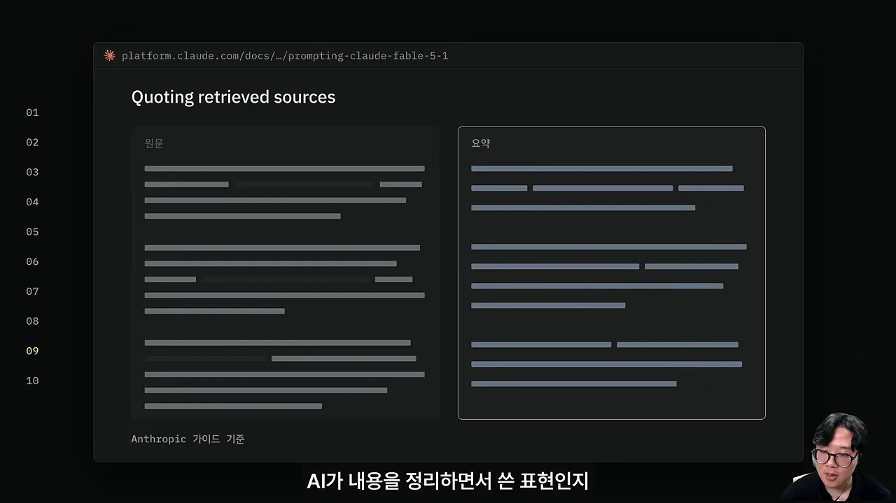
Anthropic의 해법은 시스템 프롬프트에 올바른 답변 예시를 하나 넣는 거예요. 사용자 요청, 답변, 그리고 그 답변이 왜 올바른지 설명(rationale)까지 함께요. 공식 예시는 다리 폐쇄를 다룬 두 신문 기사를 비교하는 작업이에요. 화면에서 밑줄 친 "entirely foreseeable."만 따옴표로 가져오고, 나머지 주장은 모두 자기 말로 바꿨다는 게 정답 이유로 적혀 있어요. 맨 아래 한국어 문장은 발표자가 덧붙이라고 한 프롬프트예요.
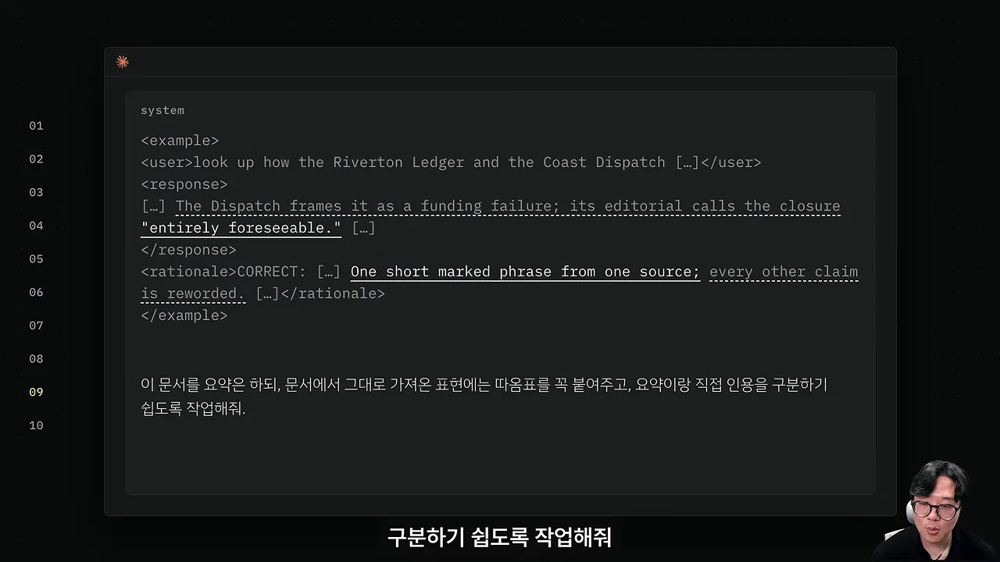
API로 대화 기록을 다룰 때
마지막 팁은 API로 에이전트를 직접 만들 때 해당해요. 발표자가 '진짜 꿀팁'이라고 강조한 부분이에요. AI의 응답에는 사용자에게 보여 줄 답변과 함께, 그 답을 만들며 거친 추론 기록이 들어 있어요. 아래 화면 가운데 JSON(JavaScript Object Notation)에서 "type": "thinking" 부분이 그 기록이 담기는 thinking 블록이고, 그 안의 "signature"가 시그니처라는 서명이에요. 그 아래 "type": "text"가 사용자에게 보여 줄 답변이에요.
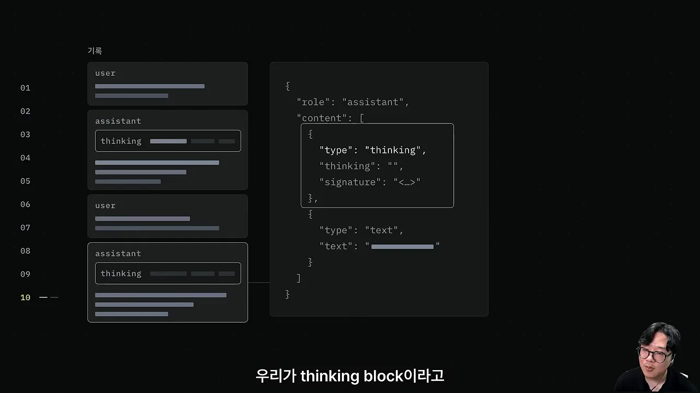
받은 그대로 돌려보내기
대화를 이어 갈 때는 앱이 이전 대화와 기록을 함께 보내요. Anthropic은 이때 thinking 블록 전체를 받은 그대로 보내고, 그 앞의 대화는 고치지 말라고 해요. 아래 화면 오른쪽 '요청' 열을 보면 앞서 받은 assistant 카드의 thinking 블록이 JSON 모양 그대로 다시 실려 있어요.
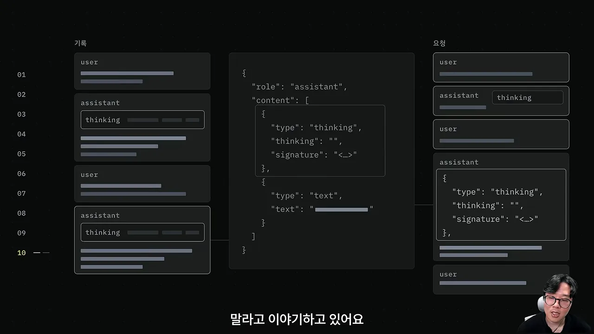
문제는 이전 대화만 짧게 요약하고 thinking 블록은 그대로 보낼 때예요. 그러면 기록이 서로 맞지 않아서 API 검사에서 오류가 날 수 있어요. 영상이 설명한 세 가지 경우를 한 그림에 모으면 이래요.
대화가 길어져 직접 요약해야 할 때
대화가 길어져 앱에서 직접 요약해야 한다면, 즉 컴팩션을 한다면 방법이 달라져요. 전체 기록을 요약 메시지 하나와 새 사용자 요청으로 아예 바꾸고, 이전 thinking 블록은 같이 보내지 않아요. 아래 화면 오른쪽 '요청' 열이 그 모양이에요. 맨 위가 '요약', 그 아래 새 user, 그리고 모델이 새로 만든 thinking이 붙은 assistant예요. 왼쪽 기록의 예전 thinking은 흐리게 빠져 있어요.
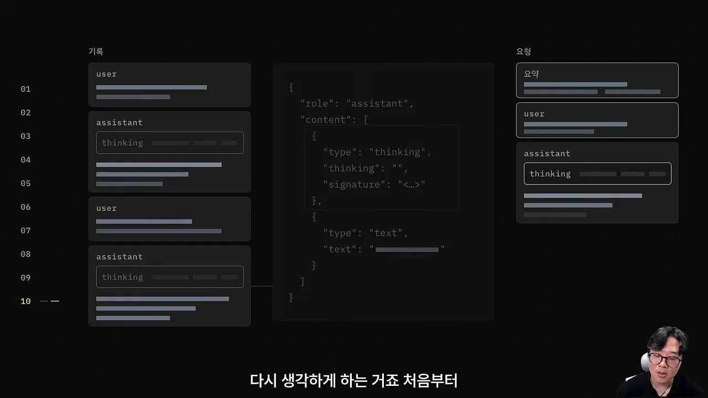
요약에 무엇을 담을지도 정해 두면 좋아요. 화면 가운데 '요약' 상자가 네 칸으로 나뉘어 있어요. 사용자가 정한 '조건', 끝낸 일인 '완료', '남은 일', 그리고 생긴 '문제'와 처리 방법이에요.
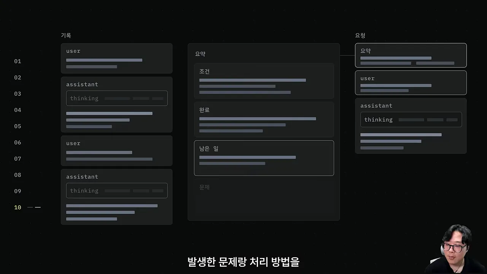
영상은 열 가지 팁을 다시 한 번 목록으로 보여 주며 끝나요. 이 문서 맨 앞의 목록 화면이 그 장면이에요.